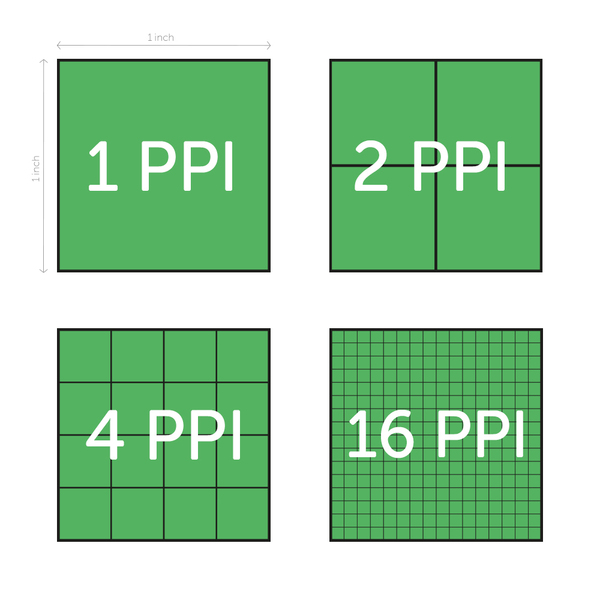

Kleurmodellen, zoals RGB (Rood, Groen, Blauw), CMYK (Cyaan, Magenta, Geel, Zwart) en HSL/HSV (Hue, Saturation, Lightness/Value), worden gebruikt om kleuren op digitale apparaten te definiëren. De meest voorkomende kleurmodel is het RGB-model (Rood, Groen, Blauw). Hierbij worden kleuren gemaakt door verschillende hoeveelheden rood, groen en blauw licht te combineren. Door verschillende intensiteiten van deze drie kleuren te mengen, kunnen alle kleuren worden weergegeven. Het CMYK model (Cyaan, Magenta, Geel, Zwart) wordt voornamelijk gebruikt voor printen en drukwerk. Het CMYK model bevat ook de kleur zwart om schaduwen te creëren. Ten slot heb je het HSL/HSV model (Hue, Saturation, Lightness/Value). Hue verwijst naar de tint, Saturation bepaalt de zuiverheid van de kleur, en Lightness (voor HSL) of waarde (voor HSV) bepaalt de helderheid.

Hierboven zie je het verschil tussen de RGB en CMYK model.
Daarnaast heb je pixels. Pixels zijn de kleinste afzonderlijke eenheden op een scherm of in een afbeelding. Ze bestaan uit rode, groene en blauwe subpixels en worden gebruikt om kleuren weer te geven. De resolutie is het aantal pixels op een beeldscherm of afbeelding en wordt gemeten in pixels per inch (PPI) of dots per inch (DPI) (zie afbeelding hierboven). Hoe hoger de resolutie, hoe scherper de afbeelding. Want hoe meer pixels per inch, des te meer details er kunnen worden weergegeven.